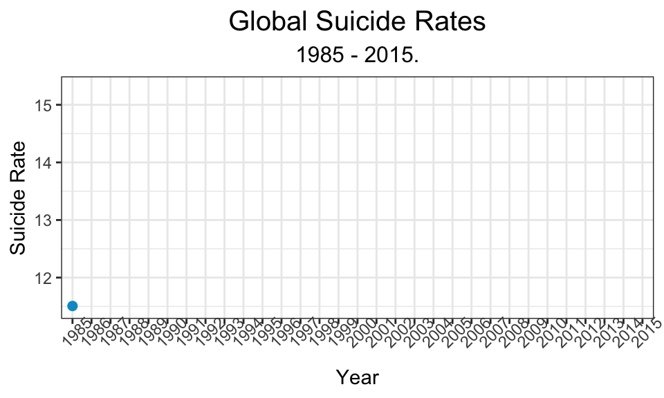
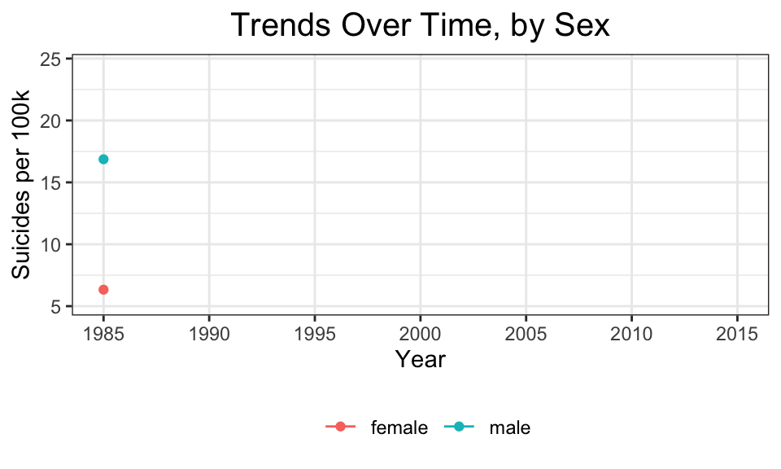
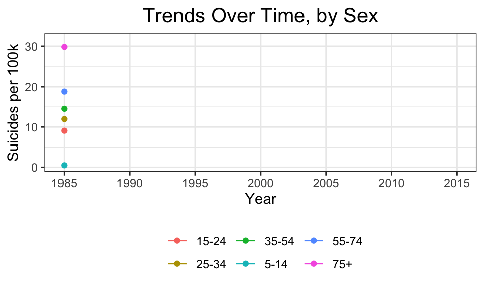

General Trend
Team Pipeitup
Global Trend of Suicide Per 100k Populationn over time
Before 1995, the suicide rate at the global level is increasing, but since then, it keeps decreasing. The peak of the suicide rate among those 30 years was 1995.
##
Rendering [---------------------------------------] at 2.1 fps ~ eta: 48s
Rendering [>----------------------------------------] at 3 fps ~ eta: 33s
Rendering [>--------------------------------------] at 3.5 fps ~ eta: 28s
Rendering [=>-------------------------------------] at 3.8 fps ~ eta: 26s
Rendering [=>---------------------------------------] at 4 fps ~ eta: 24s
Rendering [=>-------------------------------------] at 3.9 fps ~ eta: 24s
Rendering [==>------------------------------------] at 4.1 fps ~ eta: 23s
Rendering [==>------------------------------------] at 4.2 fps ~ eta: 22s
Rendering [===>-----------------------------------] at 4.3 fps ~ eta: 21s
Rendering [===>-----------------------------------] at 4.4 fps ~ eta: 20s
Rendering [===>-----------------------------------] at 4.5 fps ~ eta: 20s
Rendering [====>----------------------------------] at 4.6 fps ~ eta: 19s
Rendering [====>----------------------------------] at 4.7 fps ~ eta: 18s
Rendering [=====>---------------------------------] at 4.7 fps ~ eta: 18s
Rendering [=====>---------------------------------] at 4.6 fps ~ eta: 18s
Rendering [======>--------------------------------] at 4.6 fps ~ eta: 18s
Rendering [=======>-------------------------------] at 4.6 fps ~ eta: 17s
Rendering [=======>-------------------------------] at 4.7 fps ~ eta: 17s
Rendering [========>------------------------------] at 4.7 fps ~ eta: 17s
Rendering [========>------------------------------] at 4.7 fps ~ eta: 16s
Rendering [=========>-----------------------------] at 4.7 fps ~ eta: 16s
Rendering [==========>----------------------------] at 4.8 fps ~ eta: 15s
Rendering [===========>---------------------------] at 4.8 fps ~ eta: 14s
Rendering [===========>---------------------------] at 4.9 fps ~ eta: 14s
Rendering [============>--------------------------] at 4.9 fps ~ eta: 14s
Rendering [============>--------------------------] at 4.9 fps ~ eta: 13s
Rendering [=============>-------------------------] at 4.9 fps ~ eta: 13s
Rendering [===============>-------------------------] at 5 fps ~ eta: 13s
Rendering [===============>-------------------------] at 5 fps ~ eta: 12s
Rendering [================>------------------------] at 5 fps ~ eta: 12s
Rendering [===============>-----------------------] at 4.9 fps ~ eta: 12s
Rendering [================>----------------------] at 4.9 fps ~ eta: 12s
Rendering [================>----------------------] at 4.9 fps ~ eta: 11s
Rendering [=================>---------------------] at 4.9 fps ~ eta: 11s
Rendering [==================>--------------------] at 4.9 fps ~ eta: 11s
Rendering [==================>--------------------] at 4.9 fps ~ eta: 10s
Rendering [===================>---------------------] at 5 fps ~ eta: 10s
Rendering [====================>--------------------] at 5 fps ~ eta: 10s
Rendering [=====================>-------------------] at 5 fps ~ eta: 9s
Rendering [======================>------------------] at 5 fps ~ eta: 9s
Rendering [=======================>-----------------] at 5 fps ~ eta: 8s
Rendering [========================>----------------] at 5 fps ~ eta: 8s
Rendering [=========================>---------------] at 5 fps ~ eta: 7s
Rendering [==========================>--------------] at 5 fps ~ eta: 7s
Rendering [===========================>-------------] at 5 fps ~ eta: 6s
Rendering [============================>------------] at 5 fps ~ eta: 6s
Rendering [===========================>-----------] at 4.9 fps ~ eta: 6s
Rendering [=============================>-----------] at 5 fps ~ eta: 6s
Rendering [=============================>-----------] at 5 fps ~ eta: 5s
Rendering [==============================>----------] at 5 fps ~ eta: 5s
Rendering [===============================>---------] at 5 fps ~ eta: 5s
Rendering [===============================>---------] at 5 fps ~ eta: 4s
Rendering [================================>--------] at 5 fps ~ eta: 4s
Rendering [=================================>-------] at 5 fps ~ eta: 4s
Rendering [=================================>-------] at 5 fps ~ eta: 3s
Rendering [==================================>------] at 5 fps ~ eta: 3s
Rendering [===================================>-----] at 5 fps ~ eta: 3s
Rendering [===================================>-----] at 5 fps ~ eta: 2s
Rendering [====================================>----] at 5 fps ~ eta: 2s
Rendering [=====================================>---] at 5 fps ~ eta: 2s
Rendering [=====================================>---] at 5 fps ~ eta: 1s
Rendering [======================================>--] at 5 fps ~ eta: 1s
Rendering [====================================>--] at 5.1 fps ~ eta: 1s
Rendering [=====================================>-] at 5.1 fps ~ eta: 1s
Rendering [=====================================>-] at 5.1 fps ~ eta: 0s
Rendering [======================================>] at 5.1 fps ~ eta: 0s
Rendering [=======================================] at 5.1 fps ~ eta: 0s
##
Frame 1 (1%)
Frame 2 (2%)
Frame 3 (3%)
Frame 4 (4%)
Frame 5 (5%)
Frame 6 (6%)
Frame 7 (7%)
Frame 8 (8%)
Frame 9 (9%)
Frame 10 (10%)
Frame 11 (11%)
Frame 12 (12%)
Frame 13 (13%)
Frame 14 (14%)
Frame 15 (15%)
Frame 16 (16%)
Frame 17 (17%)
Frame 18 (18%)
Frame 19 (19%)
Frame 20 (20%)
Frame 21 (21%)
Frame 22 (22%)
Frame 23 (23%)
Frame 24 (24%)
Frame 25 (25%)
Frame 26 (26%)
Frame 27 (27%)
Frame 28 (28%)
Frame 29 (29%)
Frame 30 (30%)
Frame 31 (31%)
Frame 32 (32%)
Frame 33 (33%)
Frame 34 (34%)
Frame 35 (35%)
Frame 36 (36%)
Frame 37 (37%)
Frame 38 (38%)
Frame 39 (39%)
Frame 40 (40%)
Frame 41 (41%)
Frame 42 (42%)
Frame 43 (43%)
Frame 44 (44%)
Frame 45 (45%)
Frame 46 (46%)
Frame 47 (47%)
Frame 48 (48%)
Frame 49 (49%)
Frame 50 (50%)
Frame 51 (51%)
Frame 52 (52%)
Frame 53 (53%)
Frame 54 (54%)
Frame 55 (55%)
Frame 56 (56%)
Frame 57 (57%)
Frame 58 (58%)
Frame 59 (59%)
Frame 60 (60%)
Frame 61 (61%)
Frame 62 (62%)
Frame 63 (63%)
Frame 64 (64%)
Frame 65 (65%)
Frame 66 (66%)
Frame 67 (67%)
Frame 68 (68%)
Frame 69 (69%)
Frame 70 (70%)
Frame 71 (71%)
Frame 72 (72%)
Frame 73 (73%)
Frame 74 (74%)
Frame 75 (75%)
Frame 76 (76%)
Frame 77 (77%)
Frame 78 (78%)
Frame 79 (79%)
Frame 80 (80%)
Frame 81 (81%)
Frame 82 (82%)
Frame 83 (83%)
Frame 84 (84%)
Frame 85 (85%)
Frame 86 (86%)
Frame 87 (87%)
Frame 88 (88%)
Frame 89 (89%)
Frame 90 (90%)
Frame 91 (91%)
Frame 92 (92%)
Frame 93 (93%)
Frame 94 (94%)
Frame 95 (95%)
Frame 96 (96%)
Frame 97 (97%)
Frame 98 (98%)
Frame 99 (99%)
Frame 100 (100%)
## Finalizing encoding... done!
Global Trend of Suicide Per 100k Populationn by gender over time
We found that surprisingly, male has higher rate of suicide than female since 1985. Female suicide rate has a very stable trend throughout the history, while there were dramatic changes for male. As mentioned in the other graph, there is a peak in 1995 for the suiceide rate.
##
Rendering [---------------------------------------] at 3.9 fps ~ eta: 26s
Rendering [>--------------------------------------] at 3.8 fps ~ eta: 25s
Rendering [=>-------------------------------------] at 3.3 fps ~ eta: 29s
Rendering [=>-------------------------------------] at 3.5 fps ~ eta: 27s
Rendering [=>-------------------------------------] at 3.3 fps ~ eta: 28s
Rendering [==>------------------------------------] at 3.4 fps ~ eta: 28s
Rendering [==>------------------------------------] at 3.5 fps ~ eta: 26s
Rendering [===>-----------------------------------] at 3.6 fps ~ eta: 25s
Rendering [===>-----------------------------------] at 3.7 fps ~ eta: 24s
Rendering [===>-----------------------------------] at 3.8 fps ~ eta: 23s
Rendering [====>----------------------------------] at 3.9 fps ~ eta: 23s
Rendering [====>------------------------------------] at 4 fps ~ eta: 22s
Rendering [=====>-----------------------------------] at 4 fps ~ eta: 21s
Rendering [=====>---------------------------------] at 4.1 fps ~ eta: 21s
Rendering [=====>---------------------------------] at 4.1 fps ~ eta: 20s
Rendering [======>--------------------------------] at 4.2 fps ~ eta: 20s
Rendering [======>--------------------------------] at 4.2 fps ~ eta: 19s
Rendering [=======>-------------------------------] at 4.3 fps ~ eta: 19s
Rendering [=======>-------------------------------] at 4.3 fps ~ eta: 18s
Rendering [========>------------------------------] at 4.3 fps ~ eta: 18s
Rendering [========>------------------------------] at 4.4 fps ~ eta: 18s
Rendering [========>------------------------------] at 4.4 fps ~ eta: 17s
Rendering [=========>-----------------------------] at 4.4 fps ~ eta: 17s
Rendering [==========>----------------------------] at 4.4 fps ~ eta: 16s
Rendering [==========>----------------------------] at 4.3 fps ~ eta: 17s
Rendering [==========>----------------------------] at 4.3 fps ~ eta: 16s
Rendering [===========>---------------------------] at 4.4 fps ~ eta: 16s
Rendering [===========>---------------------------] at 4.4 fps ~ eta: 15s
Rendering [============>--------------------------] at 4.4 fps ~ eta: 15s
Rendering [=============>-------------------------] at 4.4 fps ~ eta: 15s
Rendering [=============>-------------------------] at 4.5 fps ~ eta: 14s
Rendering [==============>------------------------] at 4.5 fps ~ eta: 14s
Rendering [===============>-----------------------] at 4.5 fps ~ eta: 13s
Rendering [================>----------------------] at 4.6 fps ~ eta: 13s
Rendering [================>----------------------] at 4.6 fps ~ eta: 12s
Rendering [=================>---------------------] at 4.6 fps ~ eta: 12s
Rendering [==================>--------------------] at 4.6 fps ~ eta: 11s
Rendering [===================>-------------------] at 4.6 fps ~ eta: 11s
Rendering [===================>-------------------] at 4.6 fps ~ eta: 10s
Rendering [====================>------------------] at 4.6 fps ~ eta: 10s
Rendering [=====================>-----------------] at 4.6 fps ~ eta: 9s
Rendering [======================>----------------] at 4.6 fps ~ eta: 9s
Rendering [=======================>---------------] at 4.7 fps ~ eta: 8s
Rendering [========================>--------------] at 4.7 fps ~ eta: 8s
Rendering [========================>--------------] at 4.7 fps ~ eta: 7s
Rendering [=========================>-------------] at 4.7 fps ~ eta: 7s
Rendering [==========================>------------] at 4.7 fps ~ eta: 7s
Rendering [==========================>------------] at 4.7 fps ~ eta: 6s
Rendering [===========================>-----------] at 4.7 fps ~ eta: 6s
Rendering [============================>----------] at 4.7 fps ~ eta: 6s
Rendering [============================>----------] at 4.7 fps ~ eta: 5s
Rendering [=============================>---------] at 4.7 fps ~ eta: 5s
Rendering [==============================>--------] at 4.7 fps ~ eta: 4s
Rendering [===============================>-------] at 4.7 fps ~ eta: 4s
Rendering [================================>------] at 4.7 fps ~ eta: 3s
Rendering [=================================>-----] at 4.7 fps ~ eta: 3s
Rendering [==================================>----] at 4.7 fps ~ eta: 2s
Rendering [===================================>---] at 4.7 fps ~ eta: 2s
Rendering [===================================>---] at 4.7 fps ~ eta: 1s
Rendering [====================================>--] at 4.7 fps ~ eta: 1s
Rendering [=====================================>-] at 4.7 fps ~ eta: 1s
Rendering [=====================================>-] at 4.7 fps ~ eta: 0s
Rendering [======================================>] at 4.8 fps ~ eta: 0s
Rendering [=======================================] at 4.7 fps ~ eta: 0s
##
Frame 1 (1%)
Frame 2 (2%)
Frame 3 (3%)
Frame 4 (4%)
Frame 5 (5%)
Frame 6 (6%)
Frame 7 (7%)
Frame 8 (8%)
Frame 9 (9%)
Frame 10 (10%)
Frame 11 (11%)
Frame 12 (12%)
Frame 13 (13%)
Frame 14 (14%)
Frame 15 (15%)
Frame 16 (16%)
Frame 17 (17%)
Frame 18 (18%)
Frame 19 (19%)
Frame 20 (20%)
Frame 21 (21%)
Frame 22 (22%)
Frame 23 (23%)
Frame 24 (24%)
Frame 25 (25%)
Frame 26 (26%)
Frame 27 (27%)
Frame 28 (28%)
Frame 29 (29%)
Frame 30 (30%)
Frame 31 (31%)
Frame 32 (32%)
Frame 33 (33%)
Frame 34 (34%)
Frame 35 (35%)
Frame 36 (36%)
Frame 37 (37%)
Frame 38 (38%)
Frame 39 (39%)
Frame 40 (40%)
Frame 41 (41%)
Frame 42 (42%)
Frame 43 (43%)
Frame 44 (44%)
Frame 45 (45%)
Frame 46 (46%)
Frame 47 (47%)
Frame 48 (48%)
Frame 49 (49%)
Frame 50 (50%)
Frame 51 (51%)
Frame 52 (52%)
Frame 53 (53%)
Frame 54 (54%)
Frame 55 (55%)
Frame 56 (56%)
Frame 57 (57%)
Frame 58 (58%)
Frame 59 (59%)
Frame 60 (60%)
Frame 61 (61%)
Frame 62 (62%)
Frame 63 (63%)
Frame 64 (64%)
Frame 65 (65%)
Frame 66 (66%)
Frame 67 (67%)
Frame 68 (68%)
Frame 69 (69%)
Frame 70 (70%)
Frame 71 (71%)
Frame 72 (72%)
Frame 73 (73%)
Frame 74 (74%)
Frame 75 (75%)
Frame 76 (76%)
Frame 77 (77%)
Frame 78 (78%)
Frame 79 (79%)
Frame 80 (80%)
Frame 81 (81%)
Frame 82 (82%)
Frame 83 (83%)
Frame 84 (84%)
Frame 85 (85%)
Frame 86 (86%)
Frame 87 (87%)
Frame 88 (88%)
Frame 89 (89%)
Frame 90 (90%)
Frame 91 (91%)
Frame 92 (92%)
Frame 93 (93%)
Frame 94 (94%)
Frame 95 (95%)
Frame 96 (96%)
Frame 97 (97%)
Frame 98 (98%)
Frame 99 (99%)
Frame 100 (100%)
## Finalizing encoding... done!
Global Trend of Suicide Per 100k Populationn by age over time
Suicide rates for the youngest age group nearly constant and low over time. As the graph shown, elder groups have had higher suicide rate since 1985, and surprisingly such trend has not changed once. For age groups 25-34, 35-54 and 55-74 had similar trends over those 30 years.
##
Rendering [---------------------------------------] at 3.1 fps ~ eta: 32s
Rendering [>--------------------------------------] at 2.8 fps ~ eta: 35s
Rendering [>--------------------------------------] at 2.6 fps ~ eta: 37s
Rendering [=>-------------------------------------] at 2.8 fps ~ eta: 35s
Rendering [=>-------------------------------------] at 2.8 fps ~ eta: 33s
Rendering [=>-------------------------------------] at 2.9 fps ~ eta: 32s
Rendering [==>--------------------------------------] at 3 fps ~ eta: 31s
Rendering [===>-------------------------------------] at 3 fps ~ eta: 30s
Rendering [===>-----------------------------------] at 3.1 fps ~ eta: 29s
Rendering [====>----------------------------------] at 3.1 fps ~ eta: 28s
Rendering [=====>---------------------------------] at 3.1 fps ~ eta: 27s
Rendering [======>--------------------------------] at 3.1 fps ~ eta: 27s
Rendering [======>--------------------------------] at 3.1 fps ~ eta: 26s
Rendering [=======>-------------------------------] at 3.1 fps ~ eta: 25s
Rendering [========>------------------------------] at 3.1 fps ~ eta: 25s
Rendering [========>------------------------------] at 3.2 fps ~ eta: 24s
Rendering [=========>-----------------------------] at 3.2 fps ~ eta: 24s
Rendering [=========>-----------------------------] at 3.2 fps ~ eta: 23s
Rendering [==========>----------------------------] at 3.2 fps ~ eta: 23s
Rendering [==========>----------------------------] at 3.1 fps ~ eta: 23s
Rendering [===========>---------------------------] at 3.2 fps ~ eta: 22s
Rendering [============>--------------------------] at 3.2 fps ~ eta: 21s
Rendering [=============>-------------------------] at 3.2 fps ~ eta: 21s
Rendering [=============>-------------------------] at 3.2 fps ~ eta: 20s
Rendering [==============>------------------------] at 3.2 fps ~ eta: 20s
Rendering [==============>------------------------] at 3.2 fps ~ eta: 19s
Rendering [===============>-----------------------] at 3.2 fps ~ eta: 19s
Rendering [===============>-----------------------] at 3.2 fps ~ eta: 18s
Rendering [================>----------------------] at 3.2 fps ~ eta: 18s
Rendering [================>----------------------] at 3.1 fps ~ eta: 18s
Rendering [=================>---------------------] at 3.2 fps ~ eta: 17s
Rendering [=================>---------------------] at 3.1 fps ~ eta: 17s
Rendering [==================>--------------------] at 3.2 fps ~ eta: 16s
Rendering [===================>-------------------] at 3.2 fps ~ eta: 16s
Rendering [===================>-------------------] at 3.2 fps ~ eta: 15s
Rendering [====================>------------------] at 3.2 fps ~ eta: 15s
Rendering [====================>------------------] at 3.2 fps ~ eta: 14s
Rendering [=====================>-----------------] at 3.2 fps ~ eta: 14s
Rendering [======================>----------------] at 3.2 fps ~ eta: 13s
Rendering [=======================>---------------] at 3.2 fps ~ eta: 12s
Rendering [========================>--------------] at 3.2 fps ~ eta: 12s
Rendering [========================>--------------] at 3.2 fps ~ eta: 11s
Rendering [=========================>-------------] at 3.2 fps ~ eta: 11s
Rendering [=========================>-------------] at 3.2 fps ~ eta: 10s
Rendering [==========================>------------] at 3.1 fps ~ eta: 10s
Rendering [===========================>-----------] at 3.1 fps ~ eta: 9s
Rendering [============================>----------] at 3.1 fps ~ eta: 8s
Rendering [=============================>---------] at 3.1 fps ~ eta: 8s
Rendering [=============================>---------] at 3.1 fps ~ eta: 7s
Rendering [==============================>--------] at 3.1 fps ~ eta: 7s
Rendering [==============================>--------] at 3.1 fps ~ eta: 6s
Rendering [===============================>-------] at 3.1 fps ~ eta: 6s
Rendering [===============================>-------] at 3.1 fps ~ eta: 5s
Rendering [================================>------] at 3.1 fps ~ eta: 5s
Rendering [=================================>-----] at 3.1 fps ~ eta: 4s
Rendering [==================================>----] at 3.1 fps ~ eta: 4s
Rendering [==================================>----] at 3.1 fps ~ eta: 3s
Rendering [===================================>---] at 3.1 fps ~ eta: 3s
Rendering [===================================>---] at 3.1 fps ~ eta: 2s
Rendering [====================================>--] at 3.1 fps ~ eta: 2s
Rendering [====================================>--] at 3.1 fps ~ eta: 1s
Rendering [=====================================>-] at 3.1 fps ~ eta: 1s
Rendering [======================================>] at 3.1 fps ~ eta: 0s
Rendering [=======================================] at 3.1 fps ~ eta: 0s
##
Frame 1 (1%)
Frame 2 (2%)
Frame 3 (3%)
Frame 4 (4%)
Frame 5 (5%)
Frame 6 (6%)
Frame 7 (7%)
Frame 8 (8%)
Frame 9 (9%)
Frame 10 (10%)
Frame 11 (11%)
Frame 12 (12%)
Frame 13 (13%)
Frame 14 (14%)
Frame 15 (15%)
Frame 16 (16%)
Frame 17 (17%)
Frame 18 (18%)
Frame 19 (19%)
Frame 20 (20%)
Frame 21 (21%)
Frame 22 (22%)
Frame 23 (23%)
Frame 24 (24%)
Frame 25 (25%)
Frame 26 (26%)
Frame 27 (27%)
Frame 28 (28%)
Frame 29 (29%)
Frame 30 (30%)
Frame 31 (31%)
Frame 32 (32%)
Frame 33 (33%)
Frame 34 (34%)
Frame 35 (35%)
Frame 36 (36%)
Frame 37 (37%)
Frame 38 (38%)
Frame 39 (39%)
Frame 40 (40%)
Frame 41 (41%)
Frame 42 (42%)
Frame 43 (43%)
Frame 44 (44%)
Frame 45 (45%)
Frame 46 (46%)
Frame 47 (47%)
Frame 48 (48%)
Frame 49 (49%)
Frame 50 (50%)
Frame 51 (51%)
Frame 52 (52%)
Frame 53 (53%)
Frame 54 (54%)
Frame 55 (55%)
Frame 56 (56%)
Frame 57 (57%)
Frame 58 (58%)
Frame 59 (59%)
Frame 60 (60%)
Frame 61 (61%)
Frame 62 (62%)
Frame 63 (63%)
Frame 64 (64%)
Frame 65 (65%)
Frame 66 (66%)
Frame 67 (67%)
Frame 68 (68%)
Frame 69 (69%)
Frame 70 (70%)
Frame 71 (71%)
Frame 72 (72%)
Frame 73 (73%)
Frame 74 (74%)
Frame 75 (75%)
Frame 76 (76%)
Frame 77 (77%)
Frame 78 (78%)
Frame 79 (79%)
Frame 80 (80%)
Frame 81 (81%)
Frame 82 (82%)
Frame 83 (83%)
Frame 84 (84%)
Frame 85 (85%)
Frame 86 (86%)
Frame 87 (87%)
Frame 88 (88%)
Frame 89 (89%)
Frame 90 (90%)
Frame 91 (91%)
Frame 92 (92%)
Frame 93 (93%)
Frame 94 (94%)
Frame 95 (95%)
Frame 96 (96%)
Frame 97 (97%)
Frame 98 (98%)
Frame 99 (99%)
Frame 100 (100%)
## Finalizing encoding... done!
Suicide Rate by Country GDP
GDP has been viewed as a good measure about the development of a country. However, graph below shows that there are no obvious trend between GDP and suicide rate. Although GDPs across the world have been shifted toward larger direction, such trend persists.
##
Rendering [---------------------------------------] at 4.5 fps ~ eta: 22s
Rendering [>--------------------------------------] at 3.9 fps ~ eta: 25s
Rendering [>--------------------------------------] at 3.6 fps ~ eta: 27s
Rendering [=>-------------------------------------] at 3.7 fps ~ eta: 26s
Rendering [=>-------------------------------------] at 3.8 fps ~ eta: 25s
Rendering [=>-------------------------------------] at 3.9 fps ~ eta: 24s
Rendering [==>------------------------------------] at 3.9 fps ~ eta: 24s
Rendering [===>-----------------------------------] at 3.9 fps ~ eta: 23s
Rendering [====>----------------------------------] at 3.9 fps ~ eta: 23s
Rendering [====>----------------------------------] at 3.9 fps ~ eta: 22s
Rendering [=====>---------------------------------] at 3.8 fps ~ eta: 22s
Rendering [======>--------------------------------] at 3.7 fps ~ eta: 22s
Rendering [=======>-------------------------------] at 3.7 fps ~ eta: 22s
Rendering [========>------------------------------] at 3.5 fps ~ eta: 22s
Rendering [=========>-----------------------------] at 3.5 fps ~ eta: 21s
Rendering [==========>----------------------------] at 3.5 fps ~ eta: 21s
Rendering [==========>----------------------------] at 3.4 fps ~ eta: 21s
Rendering [===========>---------------------------] at 3.4 fps ~ eta: 21s
Rendering [===========>---------------------------] at 3.4 fps ~ eta: 20s
Rendering [============>--------------------------] at 3.4 fps ~ eta: 20s
Rendering [=============>-------------------------] at 3.4 fps ~ eta: 19s
Rendering [=============>-------------------------] at 3.3 fps ~ eta: 19s
Rendering [==============>------------------------] at 3.3 fps ~ eta: 19s
Rendering [==============>------------------------] at 3.3 fps ~ eta: 18s
Rendering [===============>-----------------------] at 3.3 fps ~ eta: 18s
Rendering [===============>-----------------------] at 3.3 fps ~ eta: 17s
Rendering [================>----------------------] at 3.3 fps ~ eta: 17s
Rendering [=================>---------------------] at 3.3 fps ~ eta: 17s
Rendering [=================>---------------------] at 3.3 fps ~ eta: 16s
Rendering [==================>--------------------] at 3.3 fps ~ eta: 16s
Rendering [===================>-------------------] at 3.3 fps ~ eta: 15s
Rendering [====================>------------------] at 3.3 fps ~ eta: 14s
Rendering [====================>------------------] at 3.2 fps ~ eta: 14s
Rendering [=====================>-----------------] at 3.2 fps ~ eta: 14s
Rendering [=====================>-----------------] at 3.2 fps ~ eta: 13s
Rendering [======================>----------------] at 3.2 fps ~ eta: 13s
Rendering [=======================>---------------] at 3.1 fps ~ eta: 12s
Rendering [========================>--------------] at 3.1 fps ~ eta: 12s
Rendering [========================>--------------] at 3.1 fps ~ eta: 11s
Rendering [=========================>-------------] at 3.1 fps ~ eta: 11s
Rendering [===========================>-------------] at 3 fps ~ eta: 10s
Rendering [============================>------------] at 3 fps ~ eta: 10s
Rendering [=============================>-----------] at 3 fps ~ eta: 9s
Rendering [==============================>----------] at 3 fps ~ eta: 8s
Rendering [===============================>---------] at 3 fps ~ eta: 8s
Rendering [===============================>---------] at 3 fps ~ eta: 7s
Rendering [================================>--------] at 3 fps ~ eta: 7s
Rendering [================================>--------] at 3 fps ~ eta: 6s
Rendering [=================================>-------] at 3 fps ~ eta: 6s
Rendering [=================================>-------] at 3 fps ~ eta: 5s
Rendering [==================================>------] at 3 fps ~ eta: 5s
Rendering [===================================>-----] at 3 fps ~ eta: 4s
Rendering [====================================>----] at 3 fps ~ eta: 3s
Rendering [=====================================>---] at 3 fps ~ eta: 3s
Rendering [=====================================>---] at 3 fps ~ eta: 2s
Rendering [======================================>--] at 3 fps ~ eta: 2s
Rendering [======================================>--] at 3 fps ~ eta: 1s
Rendering [=======================================>-] at 3 fps ~ eta: 1s
Rendering [======================================>] at 3.1 fps ~ eta: 0s
Rendering [=======================================] at 3.1 fps ~ eta: 0s
##
Frame 1 (1%)
Frame 2 (2%)
Frame 3 (3%)
Frame 4 (4%)
Frame 5 (5%)
Frame 6 (6%)
Frame 7 (7%)
Frame 8 (8%)
Frame 9 (9%)
Frame 10 (10%)
Frame 11 (11%)
Frame 12 (12%)
Frame 13 (13%)
Frame 14 (14%)
Frame 15 (15%)
Frame 16 (16%)
Frame 17 (17%)
Frame 18 (18%)
Frame 19 (19%)
Frame 20 (20%)
Frame 21 (21%)
Frame 22 (22%)
Frame 23 (23%)
Frame 24 (24%)
Frame 25 (25%)
Frame 26 (26%)
Frame 27 (27%)
Frame 28 (28%)
Frame 29 (29%)
Frame 30 (30%)
Frame 31 (31%)
Frame 32 (32%)
Frame 33 (33%)
Frame 34 (34%)
Frame 35 (35%)
Frame 36 (36%)
Frame 37 (37%)
Frame 38 (38%)
Frame 39 (39%)
Frame 40 (40%)
Frame 41 (41%)
Frame 42 (42%)
Frame 43 (43%)
Frame 44 (44%)
Frame 45 (45%)
Frame 46 (46%)
Frame 47 (47%)
Frame 48 (48%)
Frame 49 (49%)
Frame 50 (50%)
Frame 51 (51%)
Frame 52 (52%)
Frame 53 (53%)
Frame 54 (54%)
Frame 55 (55%)
Frame 56 (56%)
Frame 57 (57%)
Frame 58 (58%)
Frame 59 (59%)
Frame 60 (60%)
Frame 61 (61%)
Frame 62 (62%)
Frame 63 (63%)
Frame 64 (64%)
Frame 65 (65%)
Frame 66 (66%)
Frame 67 (67%)
Frame 68 (68%)
Frame 69 (69%)
Frame 70 (70%)
Frame 71 (71%)
Frame 72 (72%)
Frame 73 (73%)
Frame 74 (74%)
Frame 75 (75%)
Frame 76 (76%)
Frame 77 (77%)
Frame 78 (78%)
Frame 79 (79%)
Frame 80 (80%)
Frame 81 (81%)
Frame 82 (82%)
Frame 83 (83%)
Frame 84 (84%)
Frame 85 (85%)
Frame 86 (86%)
Frame 87 (87%)
Frame 88 (88%)
Frame 89 (89%)
Frame 90 (90%)
Frame 91 (91%)
Frame 92 (92%)
Frame 93 (93%)
Frame 94 (94%)
Frame 95 (95%)
Frame 96 (96%)
Frame 97 (97%)
Frame 98 (98%)
Frame 99 (99%)
Frame 100 (100%)
## Finalizing encoding... done!
Countries with most suicides across the years
We are also interested about the ranking of amount of suicides across the time. Below, we show the changing of the ranking across the time. Since there are too many, we will choose the top 20 countries with most total amount of suicide from 1985 to 2015. Those countries are:
| country | count |
|---|---|
| Russian Federation | 1209742 |
| United States | 1034013 |
| Japan | 806902 |
| France | 329127 |
| Ukraine | 319950 |
| Germany | 291262 |
| Republic of Korea | 261730 |
| Brazil | 226613 |
| Poland | 139098 |
| United Kingdom | 136805 |
| Italy | 132060 |
| Mexico | 111139 |
| Canada | 107561 |
| Thailand | 106526 |
| Kazakhstan | 101546 |
| Spain | 100202 |
| Argentina | 82219 |
| Hungary | 72130 |
| Romania | 70824 |
| Australia | 70111 |
From graph graph below, we can see that United States, Russian Federation and Japan are the top 3 countries with highest suicides per year. US, Japan, and Germany (number 4 in the rank) have highest GDP rank as well. After researching, Russian Federation has high suicide rate might due to heavy alcoholic use, with an estimated half of all suicides correlated with alcohol abuse.
##
Rendering [---------------------------------------] at 8.9 fps ~ eta: 1m
Rendering [-----------------------------------------] at 6 fps ~ eta: 2m
Rendering [---------------------------------------] at 6.2 fps ~ eta: 2m
Rendering [---------------------------------------] at 6.3 fps ~ eta: 2m
Rendering [---------------------------------------] at 6.6 fps ~ eta: 1m
Rendering [>--------------------------------------] at 6.8 fps ~ eta: 1m
Rendering [>----------------------------------------] at 7 fps ~ eta: 1m
Rendering [>--------------------------------------] at 7.1 fps ~ eta: 1m
Rendering [>--------------------------------------] at 7.2 fps ~ eta: 1m
Rendering [>--------------------------------------] at 7.3 fps ~ eta: 1m
Rendering [>--------------------------------------] at 7.2 fps ~ eta: 1m
Rendering [>----------------------------------------] at 7 fps ~ eta: 1m
Rendering [>--------------------------------------] at 6.9 fps ~ eta: 1m
Rendering [>--------------------------------------] at 6.8 fps ~ eta: 1m
Rendering [>--------------------------------------] at 6.9 fps ~ eta: 1m
Rendering [>--------------------------------------] at 6.8 fps ~ eta: 1m
Rendering [=>-------------------------------------] at 6.6 fps ~ eta: 1m
Rendering [=>-------------------------------------] at 6.7 fps ~ eta: 1m
Rendering [=>-------------------------------------] at 6.8 fps ~ eta: 1m
Rendering [=>-------------------------------------] at 6.9 fps ~ eta: 1m
Rendering [=>-------------------------------------] at 6.8 fps ~ eta: 1m
Rendering [=>-------------------------------------] at 6.9 fps ~ eta: 1m
Rendering [=>-------------------------------------] at 6.8 fps ~ eta: 1m
Rendering [=>-------------------------------------] at 6.7 fps ~ eta: 1m
Rendering [=>-------------------------------------] at 6.6 fps ~ eta: 1m
Rendering [=>-------------------------------------] at 6.5 fps ~ eta: 1m
Rendering [==>------------------------------------] at 6.5 fps ~ eta: 1m
Rendering [==>------------------------------------] at 6.3 fps ~ eta: 1m
Rendering [==>------------------------------------] at 6.2 fps ~ eta: 1m
Rendering [===>-----------------------------------] at 6.2 fps ~ eta: 1m
Rendering [===>-----------------------------------] at 6.1 fps ~ eta: 1m
Rendering [===>-----------------------------------] at 6.2 fps ~ eta: 1m
Rendering [====>----------------------------------] at 6.1 fps ~ eta: 1m
Rendering [=====>---------------------------------] at 6.1 fps ~ eta: 1m
Rendering [=====>-----------------------------------] at 6 fps ~ eta: 1m
Rendering [=====>---------------------------------] at 6.1 fps ~ eta: 1m
Rendering [======>--------------------------------] at 6.1 fps ~ eta: 1m
Rendering [======>--------------------------------] at 6.2 fps ~ eta: 1m
Rendering [=======>-------------------------------] at 6.2 fps ~ eta: 1m
Rendering [=======>-------------------------------] at 6.3 fps ~ eta: 1m
Rendering [=======>-------------------------------] at 6.4 fps ~ eta: 1m
Rendering [========>------------------------------] at 6.4 fps ~ eta: 1m
Rendering [========>------------------------------] at 6.5 fps ~ eta: 1m
Rendering [=========>-----------------------------] at 6.5 fps ~ eta: 1m
Rendering [=========>-----------------------------] at 6.6 fps ~ eta: 1m
Rendering [==========>----------------------------] at 6.6 fps ~ eta: 1m
Rendering [==========>----------------------------] at 6.7 fps ~ eta: 1m
Rendering [===========>---------------------------] at 6.7 fps ~ eta: 1m
Rendering [===========>---------------------------] at 6.8 fps ~ eta: 1m
Rendering [============>--------------------------] at 6.8 fps ~ eta: 1m
Rendering [============>--------------------------] at 6.9 fps ~ eta: 1m
Rendering [=============>-------------------------] at 6.9 fps ~ eta: 1m
Rendering [==============>--------------------------] at 7 fps ~ eta: 1m
Rendering [===============>-------------------------] at 7 fps ~ eta: 1m
Rendering [================>------------------------] at 7 fps ~ eta: 1m
Rendering [===============>-----------------------] at 6.9 fps ~ eta: 1m
Rendering [================>----------------------] at 6.9 fps ~ eta: 1m
Rendering [================>----------------------] at 6.9 fps ~ eta: 50s
Rendering [================>----------------------] at 6.9 fps ~ eta: 49s
Rendering [================>----------------------] at 6.8 fps ~ eta: 49s
Rendering [=================>---------------------] at 6.8 fps ~ eta: 48s
Rendering [=================>---------------------] at 6.8 fps ~ eta: 47s
Rendering [=================>---------------------] at 6.8 fps ~ eta: 46s
Rendering [=================>---------------------] at 6.9 fps ~ eta: 46s
Rendering [==================>--------------------] at 6.9 fps ~ eta: 46s
Rendering [==================>--------------------] at 6.9 fps ~ eta: 45s
Rendering [==================>--------------------] at 6.9 fps ~ eta: 44s
Rendering [===================>-------------------] at 6.9 fps ~ eta: 43s
Rendering [===================>-------------------] at 6.9 fps ~ eta: 42s
Rendering [===================>-------------------] at 6.9 fps ~ eta: 41s
Rendering [====================>------------------] at 6.9 fps ~ eta: 41s
Rendering [====================>------------------] at 6.9 fps ~ eta: 40s
Rendering [=====================>-------------------] at 7 fps ~ eta: 40s
Rendering [=====================>-------------------] at 7 fps ~ eta: 39s
Rendering [======================>------------------] at 7 fps ~ eta: 39s
Rendering [======================>------------------] at 7 fps ~ eta: 38s
Rendering [======================>------------------] at 7 fps ~ eta: 37s
Rendering [=======================>-----------------] at 7 fps ~ eta: 37s
Rendering [=======================>-----------------] at 7 fps ~ eta: 36s
Rendering [=======================>-----------------] at 7 fps ~ eta: 35s
Rendering [========================>----------------] at 7 fps ~ eta: 34s
Rendering [========================>----------------] at 7 fps ~ eta: 33s
Rendering [=========================>---------------] at 7 fps ~ eta: 32s
Rendering [=========================>---------------] at 7 fps ~ eta: 31s
Rendering [========================>--------------] at 6.9 fps ~ eta: 31s
Rendering [=========================>---------------] at 7 fps ~ eta: 31s
Rendering [==========================>--------------] at 7 fps ~ eta: 31s
Rendering [========================>--------------] at 6.9 fps ~ eta: 30s
Rendering [=========================>-------------] at 6.9 fps ~ eta: 30s
Rendering [=========================>-------------] at 6.9 fps ~ eta: 29s
Rendering [=========================>-------------] at 6.9 fps ~ eta: 28s
Rendering [==========================>------------] at 6.8 fps ~ eta: 28s
Rendering [==========================>------------] at 6.8 fps ~ eta: 27s
Rendering [==========================>------------] at 6.8 fps ~ eta: 26s
Rendering [===========================>-----------] at 6.8 fps ~ eta: 26s
Rendering [===========================>-----------] at 6.8 fps ~ eta: 25s
Rendering [===========================>-----------] at 6.8 fps ~ eta: 24s
Rendering [============================>----------] at 6.8 fps ~ eta: 24s
Rendering [============================>----------] at 6.8 fps ~ eta: 23s
Rendering [============================>----------] at 6.8 fps ~ eta: 22s
Rendering [============================>----------] at 6.9 fps ~ eta: 22s
Rendering [============================>----------] at 6.8 fps ~ eta: 22s
Rendering [============================>----------] at 6.8 fps ~ eta: 21s
Rendering [=============================>---------] at 6.8 fps ~ eta: 21s
Rendering [=============================>---------] at 6.8 fps ~ eta: 20s
Rendering [=============================>---------] at 6.8 fps ~ eta: 19s
Rendering [==============================>--------] at 6.8 fps ~ eta: 19s
Rendering [==============================>--------] at 6.8 fps ~ eta: 18s
Rendering [==============================>--------] at 6.8 fps ~ eta: 17s
Rendering [===============================>-------] at 6.8 fps ~ eta: 17s
Rendering [===============================>-------] at 6.7 fps ~ eta: 17s
Rendering [===============================>-------] at 6.7 fps ~ eta: 16s
Rendering [===============================>-------] at 6.7 fps ~ eta: 15s
Rendering [================================>------] at 6.7 fps ~ eta: 15s
Rendering [================================>------] at 6.7 fps ~ eta: 14s
Rendering [================================>------] at 6.7 fps ~ eta: 13s
Rendering [=================================>-----] at 6.7 fps ~ eta: 13s
Rendering [=================================>-----] at 6.7 fps ~ eta: 12s
Rendering [=================================>-----] at 6.7 fps ~ eta: 11s
Rendering [=================================>-----] at 6.7 fps ~ eta: 10s
Rendering [==================================>----] at 6.7 fps ~ eta: 10s
Rendering [==================================>----] at 6.7 fps ~ eta: 9s
Rendering [==================================>----] at 6.7 fps ~ eta: 8s
Rendering [===================================>---] at 6.7 fps ~ eta: 8s
Rendering [===================================>---] at 6.7 fps ~ eta: 7s
Rendering [===================================>---] at 6.7 fps ~ eta: 6s
Rendering [====================================>--] at 6.7 fps ~ eta: 6s
Rendering [====================================>--] at 6.7 fps ~ eta: 5s
Rendering [====================================>--] at 6.7 fps ~ eta: 4s
Rendering [=====================================>-] at 6.7 fps ~ eta: 3s
Rendering [=====================================>-] at 6.7 fps ~ eta: 2s
Rendering [=====================================>-] at 6.7 fps ~ eta: 1s
Rendering [======================================>] at 6.7 fps ~ eta: 1s
Rendering [======================================>] at 6.7 fps ~ eta: 0s
Rendering [=======================================] at 6.7 fps ~ eta: 0s
##
Frame 1 (0%)
Frame 2 (0%)
Frame 3 (0%)
Frame 4 (0%)
Frame 5 (0%)
Frame 6 (1%)
Frame 7 (1%)
Frame 8 (1%)
Frame 9 (1%)
Frame 10 (1%)
Frame 11 (1%)
Frame 12 (2%)
Frame 13 (2%)
Frame 14 (2%)
Frame 15 (2%)
Frame 16 (2%)
Frame 17 (2%)
Frame 18 (3%)
Frame 19 (3%)
Frame 20 (3%)
Frame 21 (3%)
Frame 22 (3%)
Frame 23 (3%)
Frame 24 (4%)
Frame 25 (4%)
Frame 26 (4%)
Frame 27 (4%)
Frame 28 (4%)
Frame 29 (4%)
Frame 30 (5%)
Frame 31 (5%)
Frame 32 (5%)
Frame 33 (5%)
Frame 34 (5%)
Frame 35 (5%)
Frame 36 (6%)
Frame 37 (6%)
Frame 38 (6%)
Frame 39 (6%)
Frame 40 (6%)
Frame 41 (6%)
Frame 42 (7%)
Frame 43 (7%)
Frame 44 (7%)
Frame 45 (7%)
Frame 46 (7%)
Frame 47 (7%)
Frame 48 (8%)
Frame 49 (8%)
Frame 50 (8%)
Frame 51 (8%)
Frame 52 (8%)
Frame 53 (8%)
Frame 54 (9%)
Frame 55 (9%)
Frame 56 (9%)
Frame 57 (9%)
Frame 58 (9%)
Frame 59 (9%)
Frame 60 (10%)
Frame 61 (10%)
Frame 62 (10%)
Frame 63 (10%)
Frame 64 (10%)
Frame 65 (10%)
Frame 66 (11%)
Frame 67 (11%)
Frame 68 (11%)
Frame 69 (11%)
Frame 70 (11%)
Frame 71 (11%)
Frame 72 (12%)
Frame 73 (12%)
Frame 74 (12%)
Frame 75 (12%)
Frame 76 (12%)
Frame 77 (12%)
Frame 78 (13%)
Frame 79 (13%)
Frame 80 (13%)
Frame 81 (13%)
Frame 82 (13%)
Frame 83 (13%)
Frame 84 (14%)
Frame 85 (14%)
Frame 86 (14%)
Frame 87 (14%)
Frame 88 (14%)
Frame 89 (14%)
Frame 90 (15%)
Frame 91 (15%)
Frame 92 (15%)
Frame 93 (15%)
Frame 94 (15%)
Frame 95 (15%)
Frame 96 (16%)
Frame 97 (16%)
Frame 98 (16%)
Frame 99 (16%)
Frame 100 (16%)
Frame 101 (16%)
Frame 102 (17%)
Frame 103 (17%)
Frame 104 (17%)
Frame 105 (17%)
Frame 106 (17%)
Frame 107 (17%)
Frame 108 (18%)
Frame 109 (18%)
Frame 110 (18%)
Frame 111 (18%)
Frame 112 (18%)
Frame 113 (18%)
Frame 114 (19%)
Frame 115 (19%)
Frame 116 (19%)
Frame 117 (19%)
Frame 118 (19%)
Frame 119 (19%)
Frame 120 (20%)
Frame 121 (20%)
Frame 122 (20%)
Frame 123 (20%)
Frame 124 (20%)
Frame 125 (20%)
Frame 126 (21%)
Frame 127 (21%)
Frame 128 (21%)
Frame 129 (21%)
Frame 130 (21%)
Frame 131 (21%)
Frame 132 (22%)
Frame 133 (22%)
Frame 134 (22%)
Frame 135 (22%)
Frame 136 (22%)
Frame 137 (22%)
Frame 138 (23%)
Frame 139 (23%)
Frame 140 (23%)
Frame 141 (23%)
Frame 142 (23%)
Frame 143 (23%)
Frame 144 (24%)
Frame 145 (24%)
Frame 146 (24%)
Frame 147 (24%)
Frame 148 (24%)
Frame 149 (24%)
Frame 150 (25%)
Frame 151 (25%)
Frame 152 (25%)
Frame 153 (25%)
Frame 154 (25%)
Frame 155 (25%)
Frame 156 (26%)
Frame 157 (26%)
Frame 158 (26%)
Frame 159 (26%)
Frame 160 (26%)
Frame 161 (26%)
Frame 162 (27%)
Frame 163 (27%)
Frame 164 (27%)
Frame 165 (27%)
Frame 166 (27%)
Frame 167 (27%)
Frame 168 (28%)
Frame 169 (28%)
Frame 170 (28%)
Frame 171 (28%)
Frame 172 (28%)
Frame 173 (28%)
Frame 174 (29%)
Frame 175 (29%)
Frame 176 (29%)
Frame 177 (29%)
Frame 178 (29%)
Frame 179 (29%)
Frame 180 (30%)
Frame 181 (30%)
Frame 182 (30%)
Frame 183 (30%)
Frame 184 (30%)
Frame 185 (30%)
Frame 186 (31%)
Frame 187 (31%)
Frame 188 (31%)
Frame 189 (31%)
Frame 190 (31%)
Frame 191 (31%)
Frame 192 (32%)
Frame 193 (32%)
Frame 194 (32%)
Frame 195 (32%)
Frame 196 (32%)
Frame 197 (32%)
Frame 198 (33%)
Frame 199 (33%)
Frame 200 (33%)
Frame 201 (33%)
Frame 202 (33%)
Frame 203 (33%)
Frame 204 (34%)
Frame 205 (34%)
Frame 206 (34%)
Frame 207 (34%)
Frame 208 (34%)
Frame 209 (34%)
Frame 210 (35%)
Frame 211 (35%)
Frame 212 (35%)
Frame 213 (35%)
Frame 214 (35%)
Frame 215 (35%)
Frame 216 (36%)
Frame 217 (36%)
Frame 218 (36%)
Frame 219 (36%)
Frame 220 (36%)
Frame 221 (36%)
Frame 222 (37%)
Frame 223 (37%)
Frame 224 (37%)
Frame 225 (37%)
Frame 226 (37%)
Frame 227 (37%)
Frame 228 (38%)
Frame 229 (38%)
Frame 230 (38%)
Frame 231 (38%)
Frame 232 (38%)
Frame 233 (38%)
Frame 234 (39%)
Frame 235 (39%)
Frame 236 (39%)
Frame 237 (39%)
Frame 238 (39%)
Frame 239 (39%)
Frame 240 (40%)
Frame 241 (40%)
Frame 242 (40%)
Frame 243 (40%)
Frame 244 (40%)
Frame 245 (40%)
Frame 246 (41%)
Frame 247 (41%)
Frame 248 (41%)
Frame 249 (41%)
Frame 250 (41%)
Frame 251 (41%)
Frame 252 (42%)
Frame 253 (42%)
Frame 254 (42%)
Frame 255 (42%)
Frame 256 (42%)
Frame 257 (42%)
Frame 258 (43%)
Frame 259 (43%)
Frame 260 (43%)
Frame 261 (43%)
Frame 262 (43%)
Frame 263 (43%)
Frame 264 (44%)
Frame 265 (44%)
Frame 266 (44%)
Frame 267 (44%)
Frame 268 (44%)
Frame 269 (44%)
Frame 270 (45%)
Frame 271 (45%)
Frame 272 (45%)
Frame 273 (45%)
Frame 274 (45%)
Frame 275 (45%)
Frame 276 (46%)
Frame 277 (46%)
Frame 278 (46%)
Frame 279 (46%)
Frame 280 (46%)
Frame 281 (46%)
Frame 282 (47%)
Frame 283 (47%)
Frame 284 (47%)
Frame 285 (47%)
Frame 286 (47%)
Frame 287 (47%)
Frame 288 (48%)
Frame 289 (48%)
Frame 290 (48%)
Frame 291 (48%)
Frame 292 (48%)
Frame 293 (48%)
Frame 294 (49%)
Frame 295 (49%)
Frame 296 (49%)
Frame 297 (49%)
Frame 298 (49%)
Frame 299 (49%)
Frame 300 (50%)
Frame 301 (50%)
Frame 302 (50%)
Frame 303 (50%)
Frame 304 (50%)
Frame 305 (50%)
Frame 306 (51%)
Frame 307 (51%)
Frame 308 (51%)
Frame 309 (51%)
Frame 310 (51%)
Frame 311 (51%)
Frame 312 (52%)
Frame 313 (52%)
Frame 314 (52%)
Frame 315 (52%)
Frame 316 (52%)
Frame 317 (52%)
Frame 318 (53%)
Frame 319 (53%)
Frame 320 (53%)
Frame 321 (53%)
Frame 322 (53%)
Frame 323 (53%)
Frame 324 (54%)
Frame 325 (54%)
Frame 326 (54%)
Frame 327 (54%)
Frame 328 (54%)
Frame 329 (54%)
Frame 330 (55%)
Frame 331 (55%)
Frame 332 (55%)
Frame 333 (55%)
Frame 334 (55%)
Frame 335 (55%)
Frame 336 (56%)
Frame 337 (56%)
Frame 338 (56%)
Frame 339 (56%)
Frame 340 (56%)
Frame 341 (56%)
Frame 342 (57%)
Frame 343 (57%)
Frame 344 (57%)
Frame 345 (57%)
Frame 346 (57%)
Frame 347 (57%)
Frame 348 (58%)
Frame 349 (58%)
Frame 350 (58%)
Frame 351 (58%)
Frame 352 (58%)
Frame 353 (58%)
Frame 354 (59%)
Frame 355 (59%)
Frame 356 (59%)
Frame 357 (59%)
Frame 358 (59%)
Frame 359 (59%)
Frame 360 (60%)
Frame 361 (60%)
Frame 362 (60%)
Frame 363 (60%)
Frame 364 (60%)
Frame 365 (60%)
Frame 366 (61%)
Frame 367 (61%)
Frame 368 (61%)
Frame 369 (61%)
Frame 370 (61%)
Frame 371 (61%)
Frame 372 (62%)
Frame 373 (62%)
Frame 374 (62%)
Frame 375 (62%)
Frame 376 (62%)
Frame 377 (62%)
Frame 378 (63%)
Frame 379 (63%)
Frame 380 (63%)
Frame 381 (63%)
Frame 382 (63%)
Frame 383 (63%)
Frame 384 (64%)
Frame 385 (64%)
Frame 386 (64%)
Frame 387 (64%)
Frame 388 (64%)
Frame 389 (64%)
Frame 390 (65%)
Frame 391 (65%)
Frame 392 (65%)
Frame 393 (65%)
Frame 394 (65%)
Frame 395 (65%)
Frame 396 (66%)
Frame 397 (66%)
Frame 398 (66%)
Frame 399 (66%)
Frame 400 (66%)
Frame 401 (66%)
Frame 402 (67%)
Frame 403 (67%)
Frame 404 (67%)
Frame 405 (67%)
Frame 406 (67%)
Frame 407 (67%)
Frame 408 (68%)
Frame 409 (68%)
Frame 410 (68%)
Frame 411 (68%)
Frame 412 (68%)
Frame 413 (68%)
Frame 414 (69%)
Frame 415 (69%)
Frame 416 (69%)
Frame 417 (69%)
Frame 418 (69%)
Frame 419 (69%)
Frame 420 (70%)
Frame 421 (70%)
Frame 422 (70%)
Frame 423 (70%)
Frame 424 (70%)
Frame 425 (70%)
Frame 426 (71%)
Frame 427 (71%)
Frame 428 (71%)
Frame 429 (71%)
Frame 430 (71%)
Frame 431 (71%)
Frame 432 (72%)
Frame 433 (72%)
Frame 434 (72%)
Frame 435 (72%)
Frame 436 (72%)
Frame 437 (72%)
Frame 438 (73%)
Frame 439 (73%)
Frame 440 (73%)
Frame 441 (73%)
Frame 442 (73%)
Frame 443 (73%)
Frame 444 (74%)
Frame 445 (74%)
Frame 446 (74%)
Frame 447 (74%)
Frame 448 (74%)
Frame 449 (74%)
Frame 450 (75%)
Frame 451 (75%)
Frame 452 (75%)
Frame 453 (75%)
Frame 454 (75%)
Frame 455 (75%)
Frame 456 (76%)
Frame 457 (76%)
Frame 458 (76%)
Frame 459 (76%)
Frame 460 (76%)
Frame 461 (76%)
Frame 462 (77%)
Frame 463 (77%)
Frame 464 (77%)
Frame 465 (77%)
Frame 466 (77%)
Frame 467 (77%)
Frame 468 (78%)
Frame 469 (78%)
Frame 470 (78%)
Frame 471 (78%)
Frame 472 (78%)
Frame 473 (78%)
Frame 474 (79%)
Frame 475 (79%)
Frame 476 (79%)
Frame 477 (79%)
Frame 478 (79%)
Frame 479 (79%)
Frame 480 (80%)
Frame 481 (80%)
Frame 482 (80%)
Frame 483 (80%)
Frame 484 (80%)
Frame 485 (80%)
Frame 486 (81%)
Frame 487 (81%)
Frame 488 (81%)
Frame 489 (81%)
Frame 490 (81%)
Frame 491 (81%)
Frame 492 (82%)
Frame 493 (82%)
Frame 494 (82%)
Frame 495 (82%)
Frame 496 (82%)
Frame 497 (82%)
Frame 498 (83%)
Frame 499 (83%)
Frame 500 (83%)
Frame 501 (83%)
Frame 502 (83%)
Frame 503 (83%)
Frame 504 (84%)
Frame 505 (84%)
Frame 506 (84%)
Frame 507 (84%)
Frame 508 (84%)
Frame 509 (84%)
Frame 510 (85%)
Frame 511 (85%)
Frame 512 (85%)
Frame 513 (85%)
Frame 514 (85%)
Frame 515 (85%)
Frame 516 (86%)
Frame 517 (86%)
Frame 518 (86%)
Frame 519 (86%)
Frame 520 (86%)
Frame 521 (86%)
Frame 522 (87%)
Frame 523 (87%)
Frame 524 (87%)
Frame 525 (87%)
Frame 526 (87%)
Frame 527 (87%)
Frame 528 (88%)
Frame 529 (88%)
Frame 530 (88%)
Frame 531 (88%)
Frame 532 (88%)
Frame 533 (88%)
Frame 534 (89%)
Frame 535 (89%)
Frame 536 (89%)
Frame 537 (89%)
Frame 538 (89%)
Frame 539 (89%)
Frame 540 (90%)
Frame 541 (90%)
Frame 542 (90%)
Frame 543 (90%)
Frame 544 (90%)
Frame 545 (90%)
Frame 546 (91%)
Frame 547 (91%)
Frame 548 (91%)
Frame 549 (91%)
Frame 550 (91%)
Frame 551 (91%)
Frame 552 (92%)
Frame 553 (92%)
Frame 554 (92%)
Frame 555 (92%)
Frame 556 (92%)
Frame 557 (92%)
Frame 558 (93%)
Frame 559 (93%)
Frame 560 (93%)
Frame 561 (93%)
Frame 562 (93%)
Frame 563 (93%)
Frame 564 (94%)
Frame 565 (94%)
Frame 566 (94%)
Frame 567 (94%)
Frame 568 (94%)
Frame 569 (94%)
Frame 570 (95%)
Frame 571 (95%)
Frame 572 (95%)
Frame 573 (95%)
Frame 574 (95%)
Frame 575 (95%)
Frame 576 (96%)
Frame 577 (96%)
Frame 578 (96%)
Frame 579 (96%)
Frame 580 (96%)
Frame 581 (96%)
Frame 582 (97%)
Frame 583 (97%)
Frame 584 (97%)
Frame 585 (97%)
Frame 586 (97%)
Frame 587 (97%)
Frame 588 (98%)
Frame 589 (98%)
Frame 590 (98%)
Frame 591 (98%)
Frame 592 (98%)
Frame 593 (98%)
Frame 594 (99%)
Frame 595 (99%)
Frame 596 (99%)
Frame 597 (99%)
Frame 598 (99%)
Frame 599 (99%)
Frame 600 (100%)
## Finalizing encoding... done!